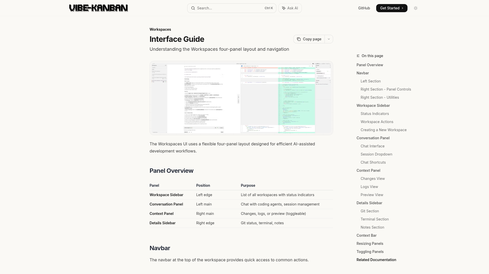
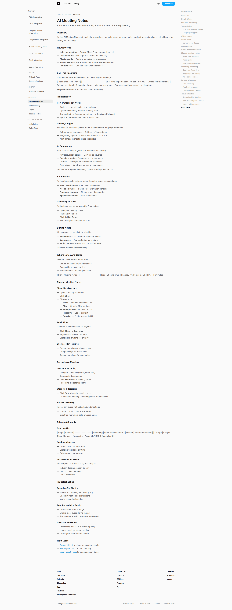

VoiceStream Current UI Report
这版报告先看当前 App.tsx 和 App.css，再谈桌面应用结构和 Lazyweb 参考。
overview / speech / pi / agent / activity。目标应该修正为桌面双表面：弹出输入胶囊 + 主动唤起的管理面板。管理面板默认应是 Dashboard，Settings 单独拆出。
127.0.0.1:1420 在普通 Edge 浏览器里没有正常显示 React 管理面板，只看到空白区域和浏览器翻译浮层。pnpm build 通过。白屏具体原因 uncertain，可能与 Tauri API、普通浏览器环境或浏览器扩展有关。
当前代码结构
type NavKey = "overview" | "speech" | "pi" | "agent" | "activity"; NAV_ITEMS: - 概览 - 语音识别 - Pi - Agent - 活动
这不是 Dashboard + Settings 的 IA，而是把概览、STT 设置、Pi 设置、Agent 和日志都放成了一级导航。
当前是 248px sidebar + scrollable main。左侧标题是 VoiceStream / 语音设置，主区 sticky header 永远显示 测试 STT 和 保存设置。
CSS token 是 paper-*，整体偏纸面文档：温暖背景、下划线表单、大量 border-bottom、pill 按钮、clamp 大标题。
当前页面判断
Overview
Overview 其实是 Dashboard 雏形：状态、音频包、Pi 路由、当前配置都有。但标题和文案是“语音输入设置”，所以用户会把它理解成设置页。
- 应改成
Dashboard。 - 不要把管理面板定义成主输入界面。
- 开始录音按钮如果保留，应明确是测试或手动检查。
Speech / Pi
speech 和 pi 都是配置页，应该进入 Settings 内部，而不是一级导航。
Settings ├─ STT ├─ Pi Routing ├─ Prompt Template ├─ Local Pi Files └─ Advanced JSON
Agent
Agent 当前的 task list + task detail 是对的。需要调整的是层级：最终结果和错误信息应比 raw events、session path 更突出。
Activity
Activity 应拆成 Dashboard 摘要 + History。Dashboard 只看最近状态，History 才承载完整 transcript、logs、audio chunk。
产品模型纠偏
VoiceStream ├─ Popup Capsule │ ├─ waveform │ ├─ live transcript │ ├─ processing │ └─ success / error └─ Management Panel ├─ Dashboard ├─ Agent ├─ History └─ Settings
胶囊是真正输入表面；管理面板是状态、诊断、历史、任务和设置。
Dashboard 建议
Dashboard 可以直接复用当前 React state，不需要先重写后端。
Dashboard ├─ Status Strip │ ├─ Ready / Recording / Processing / Error │ ├─ Dictation shortcut │ └─ Agent shortcut ├─ Readiness │ ├─ STT key │ ├─ STT model │ ├─ Pi provider/model │ └─ process reuse ├─ Pipeline: Mic -> STT -> Pi -> Paste ├─ Latest Dictation ├─ Agent Summary └─ Recent Activity
Lazyweb 参考怎么用
Lazyweb 搜到的大多是网页、landing、文档和 Web dashboard，只能间接参考。胶囊形态要看本地 docs/features/hud-capsule.md。


落地顺序
- 把
overview改成Dashboard。 - 把
speech和pi移到Settings。 - 把
activity拆成 Dashboard 摘要 + History。 - 保留
Agenttop-level。 - 把全局
测试 STT / 保存设置移到 Settings。 - 第二轮再处理视觉 token，从
paper-*转向 desktop utility dashboard。
不确定点
- 普通浏览器白屏具体原因
uncertain，但 build 通过。 - Tauri 窗口里的完整视觉状态这次没有成功截图验证，
uncertain。 - 普通 dictation history 是否持久化
uncertain。 - React 端是否能拿到真实 RMS/amplitude
uncertain，当前看到的是 audio chunk metadata。